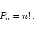
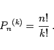
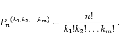
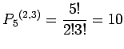

Inhalt Index DeskTop Bronstein

 Wahrscheinlichkeitsrechnung und Mathematische Statistik Kombinatorik
Wahrscheinlichkeitsrechnung und Mathematische Statistik Kombinatorik


|  | (16.1) |
| Beispiel |
|
In einem Hörsaal wurde eine Reihe mit 16 Sitzplätzen von genau 16 Studenten besetzt. Es gibt 16! Möglichkeiten für die Sitzordnung. |
|  | (16.2) |
| Beispiel |
|
Eine Reihe von 16 Sitzplätzen im Hörsaal wird von 16 Studenten mit ihren Taschen belegt. Unter den 16 Taschen befinden sich 4 gleiche. Dann gibt es 16!/4! Möglichkeiten für die Anordnung der Taschen. |
|  | (16.3) |
| Beispiel |
|
Aus den fünf Ziffern 4, 4, 5, 5, 5 können  verschiedene fünfstellige Zahlen gebildet werden. |